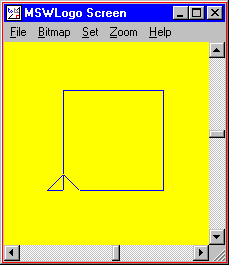
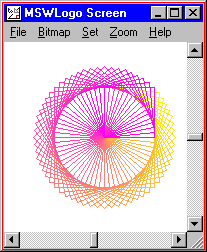
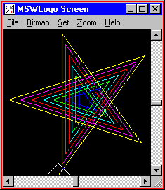
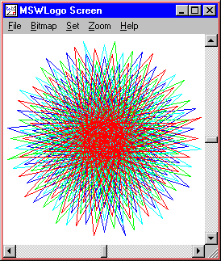
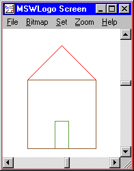

The first few lessons taught us how to write programs that draw pictures. So far, all of our programs draw the black and white pictures. In this lesson, we are going to add colors to our pictures.
Logo gives you two ways to pick a color. One way is to pick a color from a set of 16 commonly used colors. Another way is to create your own color by mixing different amounts of red, green, and blue. This gives you a choice of over 16 million different colors.
You can change the color of the lines that the turtle draws with the SETPENCOLOR command. You can change the color of the screen (or background) with the SETSCREENCOLOR command.
| Command | Example | What Happens |
|---|---|---|
| SETPENCOLOR color | SETPENCOLOR 2 | Sets the color that the turtle draws to green. |
| SETSCREENCOLOR color | SETSCREENCOLOR 2 | Fills the entire screen with green. Anything on the screen will be erased. The turtle is not moved. |
The easy way to change the color of the turtle's pen is to give SETPENCOLOR a number from 0 - 15. Each number will set the turtle's pen to a different color, given in the table below. The number is called the "color index".
| Color Index | Color Name | [R G B] | Color |
|---|---|---|---|
| 0 | black | [0 0 0] | |
| 1 | blue | [0 0 255] | |
| 2 | green | [0 255 0] | |
| 3 | cyan (light blue) | [0 255 255] | |
| 4 | red | [255 0 0] | |
| 5 | magenta (reddish purple) | [255 0 255] | |
| 6 | yellow | [255 255 0] | |
| 7 | white | [255 255 255] | |
| 8 | brown | [155 96 59] | |
| 9 | light brown | [197 136 18] | |
| 10 | dark green | [100 162 64] | |
| 11 | darkish blue | [120 187 187] | |
| 12 | tan | [255 149 119] | |
| 13 | plum (purplish) | [144 113 208] | |
| 14 | orange | [255 163 0] | |
| 15 | gray | [183 183 183] |
Activity: Draw a blue square on a yellow background.
SETSCREENCOLOR 6 SETPENCOLOR 1 REPEAT 4 [ FORWARD 100 RIGHT 90 ] |
 |
What would happen if you switched the number that you gave to SETSCREENCOLOR and SETPENCOLOR? Try it and see.
What would happen if you gave SETSCREENCOLOR and SETPENCOLOR different numbers all-together? Try it and see.
What happens if you use a number that is larger than 15?
How do you get the colors back to normal (white screen and black pen)?
What do we do if we want to use a color that is not in the color table? We can specify it using the colors red, green, and blue components. This is sometimes called an "RGB value".
Every color is the world is made up of red, green, and blue. Taken together, red, green, and blue are called "the primary colors" because you can create every color just by mixing red, green, and blue together.
You may be thinking "wait, I thought the primary colors were red, yellow and blue." Well, that's partly true. Those are actually the "primary pigment colors". They are the primary colors when dealing with paint. Actually, the primary pigment colors aren't exactly red, yellow, and blue; they're magenta (a reddish-purple), yellow, and cyan (a light blue). But when you're dealing with light, the primary colors are red, green, and blue.
The reason why red, green, and blue are so important has nothing to do with physics or computers. It has to do with the structure of the human eye. The human eye contains three types of color receptors called "cones". One type of cone is sensitive to red light, another is sensitive to green light, and another is sensitive to blue light. The brain mixes the stimulus from each of these types of cones and creates the perception of colors.
That's all very interesting, but what does this have to do with Logo? Well, Logo lets you specify colors in terms of red, green, and blue. By using RGB values, you can pick any of the colors in the table above and more that 16 million others. Instead of specifying a number from 0 - 15, you specify a triple of numbers, like this "SETPENCOLOR [187 187 187]".
Let's write a program that draws a blue square on a yellow background. But this time, let's use RGB values, instead of a color index.
SETSCREENCOLOR [255 255 0] SETPENCOLOR [0 0 255] REPEAT 4 [ FORWARD 100 RIGHT 90 ] |
Try changing the numbers in the square bracket and see what happens.
Activity: Experiment with SETPENCOLOR and SETSCREENCOLOR to create your own interesting pictures. You can start with any program from the other lessons and insert a SETSCREENCOLOR command near the beginning, or insert a SETPENCOLOR command just before the turtle moves.
TO SQUARE
REPEAT 4 [ FORWARD 50 RIGHT 90 ]
END
TO SETPEN :BRIGHTNESS
SETPENCOLOR ( LIST
255 ; red
255 - :BRIGHTNESS ; green
:BRIGHTNESS ; blue
)
END
TO SQUAREFLOWER
REPEAT 64 [
SETPEN REPCOUNT * 4 - 1
RIGHT 360 / 64
SQUARE
]
END
SQUAREFLOWER
|
 |
TO COLORSTAR
SETSCREENCOLOR 0
REPEAT 35 [
SETPENCOLOR INT (REPCOUNT - 1) / 5
FORWARD REPCOUNT * 6
RIGHT 144
]
END
COLORSTAR
|
 |
TO COLORBALL
REPEAT 4 [
SETPENCOLOR REPCOUNT
REPEAT 120 [ FORWARD REPCOUNT * 2 RIGHT 204 ]
HOME
RIGHT 90 * REPCOUNT
]
END
COLORBALL
|
 |
TO RECTANGLE :HEIGHT :WIDTH
REPEAT 2 [
FORWARD :HEIGHT
RIGHT 90
FORWARD :WIDTH
RIGHT 90
]
END
TO TRIANGLE :LENGTH
RIGHT 45
FORWARD :LENGTH * (SQRT 2) / 2
RIGHT 90
FORWARD :LENGTH * (SQRT 2) / 2
RIGHT 135
FORWARD :LENGTH
RIGHT 90
END
TO HOUSE
; draw a red roof
SETPENCOLOR [255 0 0]
FORWARD 100
TRIANGLE 100
BACK 100
; draw a dark green door
SETPENCOLOR [100 162 64]
RIGHT 90
FORWARD 60
LEFT 180
RECTANGLE 20 40
FORWARD 60
RIGHT 90
; draw a brown house
SETPENCOLOR [155 96 59]
RECTANGLE 100 100
END
HOUSE
|
 |